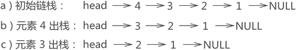
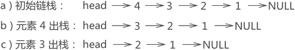

链栈及基本操作（包含入栈和出栈）详解
链栈，即用链表实现栈存储结构。
链栈的实现思路同顺序栈类似，顺序栈是将数顺序表（数组）的一端作为栈底，另一端为栈顶；链栈也如此，通常我们将链表的头部作为栈顶，尾部作为栈底，如图 1 所示：

图 1 链栈示意图
因此，链栈实际上就是一个只能采用头插法插入或删除数据的链表。

图 2 链栈元素依次入栈过程示意图
C语言实现代码为：

图 3 链栈元素出栈示意图
因此，实现栈顶元素出链栈的 C 语言实现代码为：
链栈的实现思路同顺序栈类似，顺序栈是将数顺序表（数组）的一端作为栈底，另一端为栈顶；链栈也如此，通常我们将链表的头部作为栈顶，尾部作为栈底，如图 1 所示：
图 1 链栈示意图
将链表头部作为栈顶的一端，可以避免在实现数据 "入栈" 和 "出栈" 操作时做大量遍历链表的耗时操作。
链表的头部作为栈顶，意味着：- 在实现数据"入栈"操作时，需要将数据从链表的头部插入；
- 在实现数据"出栈"操作时，需要删除链表头部的首元节点；
因此，链栈实际上就是一个只能采用头插法插入或删除数据的链表。
链栈元素入栈
例如，将元素 1、2、3、4 依次入栈，等价于将各元素采用头插法依次添加到链表中，每个数据元素的添加过程如图 2 所示：图 2 链栈元素依次入栈过程示意图
C语言实现代码为：
//链表中的节点结构
typedef struct lineStack{
int data;
struct lineStack * next;
}lineStack;
//stack为当前的链栈，a表示入栈元素
lineStack* push(lineStack * stack,int a){
//创建存储新元素的节点
lineStack * line=(lineStack*)malloc(sizeof(lineStack));
line->data=a;
//新节点与头节点建立逻辑关系
line->next=stack;
//更新头指针的指向
stack=line;
return stack;
}
链栈元素出栈
例如，图 2e) 所示的链栈中，若要将元素 3 出栈，根据"先进后出"的原则，要先将元素 4 出栈，也就是从链表中摘除，然后元素 3 才能出栈，整个操作过程如图 3 所示：
图 3 链栈元素出栈示意图
因此，实现栈顶元素出链栈的 C 语言实现代码为：
//栈顶元素出链栈的实现函数
lineStack * pop(lineStack * stack){
if (stack) {
//声明一个新指针指向栈顶节点
lineStack * p=stack;
//更新头指针
stack=stack->next;
printf("出栈元素：%d ",p->data);
if (stack) {
printf("新栈顶元素：%d\n",stack->data);
}else{
printf("栈已空\n");
}
free(p);
}else{
printf("栈内没有元素");
return stack;
}
return stack;
}
代码中通过使用 if 判断语句，避免了用户执行"栈已空却还要数据出栈"错误操作。总结
本节，通过采用头插法操作数据的单链表实现了链栈结构，这里给出链栈及基本操作的C语言完整代码：
#include <stdio.h>
#include <stdlib.h>
typedef struct lineStack{
int data;
struct lineStack * next;
}lineStack;
lineStack* push(lineStack * stack,int a){
lineStack * line=(lineStack*)malloc(sizeof(lineStack));
line->data=a;
line->next=stack;
stack=line;
return stack;
}
lineStack * pop(lineStack * stack){
if (stack) {
lineStack * p=stack;
stack=stack->next;
printf("弹栈元素：%d ",p->data);
if (stack) {
printf("栈顶元素：%d\n",stack->data);
}else{
printf("栈已空\n");
}
free(p);
}else{
printf("栈内没有元素");
return stack;
}
return stack;
}
int main() {
lineStack * stack=NULL;
stack=push(stack, 1);
stack=push(stack, 2);
stack=push(stack, 3);
stack=push(stack, 4);
stack=pop(stack);
stack=pop(stack);
stack=pop(stack);
stack=pop(stack);
stack=pop(stack);
return 0;
}
程序运行结果为：
弹栈元素：4 栈顶元素：3
弹栈元素：3 栈顶元素：2
弹栈元素：2 栈顶元素：1
弹栈元素：1 栈已空
栈内没有元素
关注公众号「站长严长生」，在手机上阅读所有教程，随时随地都能学习。内含一款搜索神器，免费下载全网书籍和视频。

微信扫码关注公众号